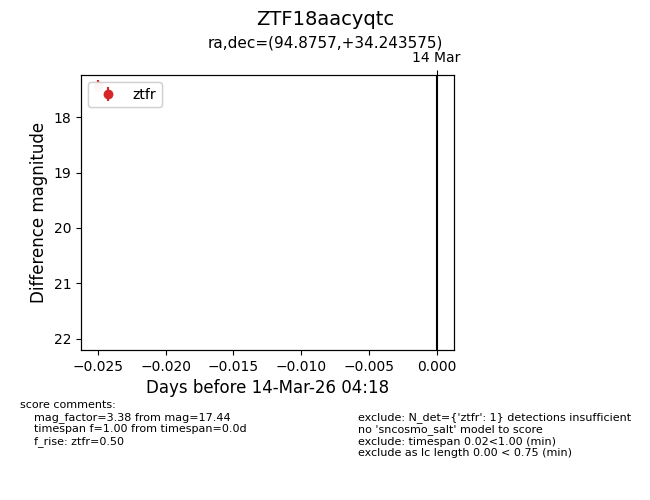
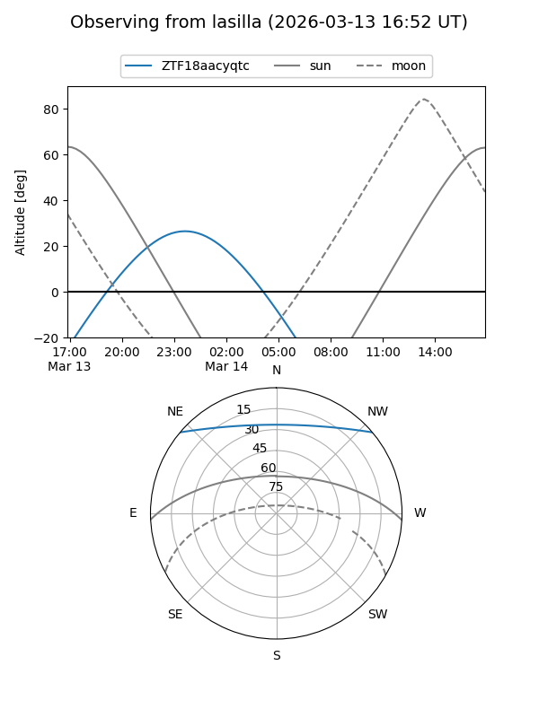
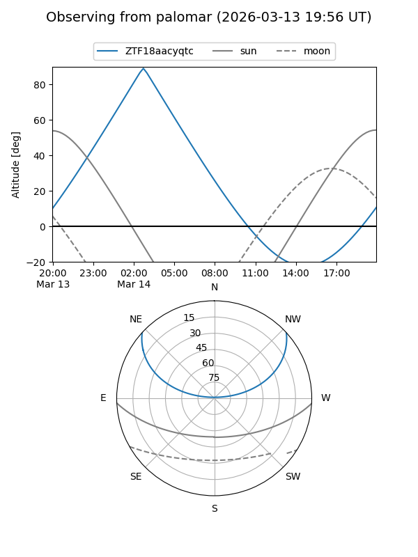

ZTF18aacyqtc
Target ZTF18aacyqtc at 2026-03-14 04:20
Aliases and brokers:
FINK: link
Lasair: link
ALeRCE: link
alt names
ZTF18aacyqtc (ztf,fink_ztf)
Coordinates:
equatorial (ra, dec) = 94.8757,+34.24358
equatorial (HMS+DMS) = 06:19:30.16,+34:14:36.87
galactic (l, b) = (178.8847,+8.88215)
Flags:
Photometry:
last ztfr=17.44
1 ztfr detections
Lightcurve

Visibility


Additional plots